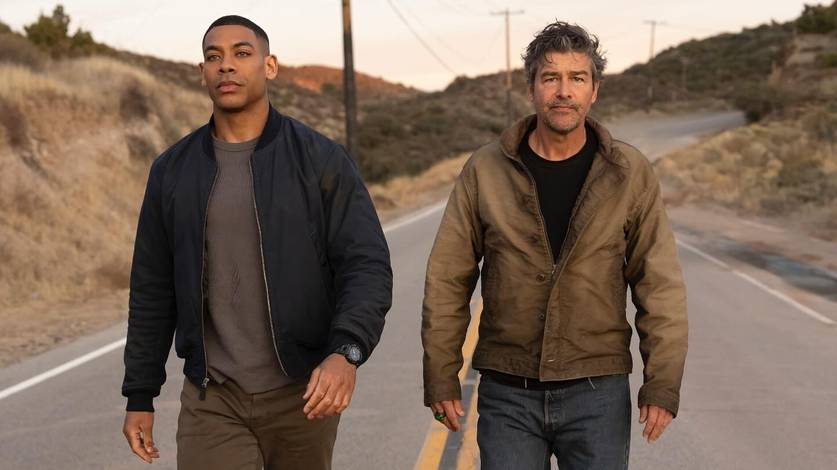

Série dos Lanternas Verdes ganha 1ª foto
Publicado em: 26 de fevereiro de 2025
A tão aguardada série dos Lanternas Verdes finalmente revelou sua primeira foto oficial. A produção, que será lançada na HBO Max, promete trazer uma nova abordagem para o universo dos Lanternas Verdes, com foco em Hal Jordan e John Stewart.
A imagem divulgada mostra os dois protagonistas em seus trajes icônicos, com os anéis dos Lanternas Verdes brilhando intensamente. A série será ambientada no espaço, explorando diferentes setores da galáxia e apresentando novos vilões e aliados.
Greg Berlanti, produtor da série, comentou: "Estamos muito animados para trazer essa história para os fãs. Hal Jordan e John Stewart são personagens incríveis, e a série vai explorar a complexidade deles enquanto protetores do universo."
A série contará com Finn Wittrock como Hal Jordan e Trevante Rhodes como John Stewart. Além disso, a produção promete trazer efeitos visuais de alta qualidade, com cenas épicas de batalhas espaciais e a criação de mundos alienígenas.
A estreia da série está prevista para 2026, e os fãs já podem esperar por mais novidades nos próximos meses.